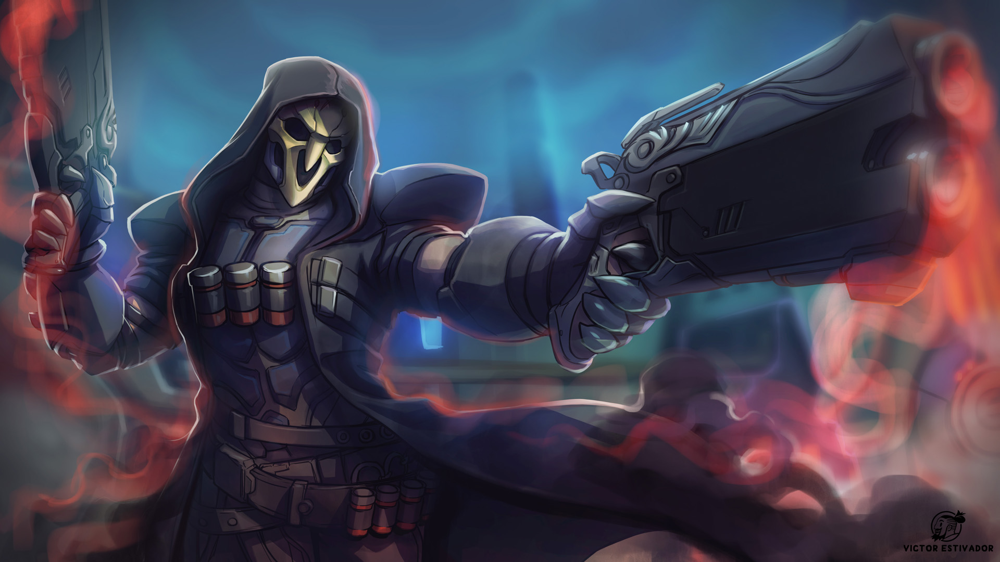

Reaper Overview
Hellfire Shotguns, the ghostly ability to become immune to damage, and the power to step between shadows make Reaper one of the deadliest beings on Earth.
Reaper doing Reaper things
Reapers Abilities
- HELLFIRE SHOTGUNS
- WRAITH FORM
- SHADOW STEP
- DEATH BLOSSOM
Reaper's Story
Some speak of a black-robed terrorist known only as the Reaper. His identity and motives are a mystery. What is known is that where he appears, death follows.
The Reaper is an extremely volatile mercenary, a ruthless and remorseless killer responsible for terrorist attacks across the world. He has fought in many armed conflicts in the last decades, showing no loyalty to any cause or organization.
Survivors have described a black shadow ghosting unscathed through the most hellish battlefields. The few bodies recovered of those he kills are pale, empty husks drained of life, their cells showing signs of intense degradation. It is possible that he is a byproduct of failed genetic alteration which forces his cells to simultaneously decay and regenerate at a hyper-accelerated rate.
Those attempting to track his movements have begun to see a pattern in his appearances. They believe that Reaper is hunting former Overwatch agents and systematically eliminating them.
Other Heros
Click the links below to learn about other heros.